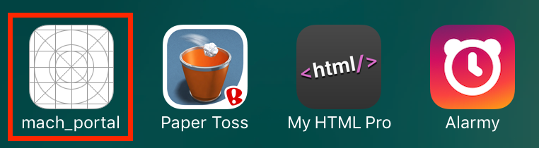
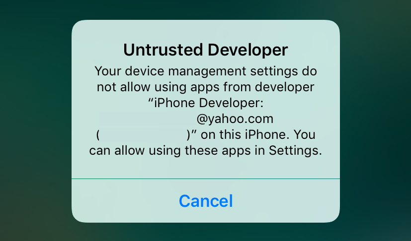
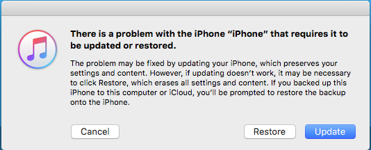

This jailbreak is still in beta atm, so be warned. Jailbreak by Luca Tudesco
By: Escher WD, originally posted on Jan 5, 2017
In this little guide, you can learn how to jailbreak your iPhone, iPod, or iPad running iOS 10.1.1.
-- Navigation --
Prerequisits
Jailbreaking
Installing Tweaks
Recommended Tweaks for a stable jailbreak
Fixes
Redownloading mach_portal after 7 days
When crap hits the fan
Other useful resources
Just like the iOS 9.3.x jailbreak, this one only works on 64-bit devices, but since this jailbreak is still in beta, only a few devices work. To the right of the phone name is the chip manufacturer, only certain phones with certain chips (listed below) will work. To check what chip you have, you can download Battery Memory System Status Monitor from the App Store. Once it downloads go to the "System" tab and find the code for "Model". If your phone and model number are on the list below, you can jailbreak.
iPhone 7 Plus | TSMC | Any
iPhone 7 | TSMC | Any
iPhone 6s Plus | Samsung | N66AP
iPhone 6s | Samsung & TSMC | N71mAP or N71AP
iPhone SE | Samsung | N69uAP
iPad Pro | TSMC | Any
Now that you know if you have a device that works, you need to check if you are on the right version of iOS. You can check what version you have by opening up settings and going to General → About. Under the "Version" part in the list, you should have "10.1.1 (14B100)" or "10.1.1 (14B150)", it doesn't matter which one you have. If you are not on this firmware, the signing window closed a while ago, so you cannot downgrade/upgrade to this firmware anymore.
You also must have a Mac or PC running OSX, Windows, or Linux and a valid Apple ID.
On your computer, plug in your device with and make sure to close iTunes if you have it open.
On any browser, go over to www.cydiaimpactor.com, and download the latest version of the software for your OS.
When it downloads, you can either open it up right away or put in your applications folder then open it up, either way, just make sure you can run the application, because it is very important.
Info: "Cydia Impactor" is a tool by Cydia's own creator, Jay Freeman (Saurik). The tool allows you to install applications outside of the app store by "signing" them with your apple ID. By default, you can install an app that is not in the app store for 7 days before it won't work again. Buying a developer's certificate from Apple signs apps for much longer because they are being used to make apps to go on the app store. I DO NOT reccomend you buy this to lengthen the 7 days before the app stops working, because doing it again is super easy.
Back on the browser, head to yalu.qweryoruiop.com to download the IPA file that will jailbreak your device. use the link that says "mirror (my own) - beta3". If you download beta4-1, it won't work.
Drag the .ipa file that you downloaded onto Cydia Impactor, like the video shown below.
IMPORTANT! Make sure you have the right device selected when you do this!
When the text cell pops up like in the video above and it says "This can be your iTunes e-mail login", enter the email you use for your Apple ID (for noobs: The email you use for the App Store).
Then, when it asks for the password, enter the password for the same Apple ID as above (for noobs: the password used for the App Store)
On Mac, if it asks for Keychain access make sure to press allow.
It will take a minute to install, so be patient. But when it does, you should see an icon similar to the one below.

When you try to open it this dialogue will appear: (email and code blurred out)

To fix this, go to Settings, and then navigate to General → Device Management and then click on your email. Then click the blue "Trust" button and you'll be good to go.
Back on the home screen, open up the "mach_portal" app and wait until it crashes and you are sent back to the home screen. It might take a sec the first time.
When it crashes, the Cydia icon should appear on the home screen, open it up. (if it crashes keep trying.)
Navigate to the "Sources" tab, click "Edit", "Add", and add http://83.218.67.215/~ijapija00/cydia, or Click here on device your jailbreaking on to add automatically
You will find a new item in the sources list with the picture below as its icon.

Go into the source and find the package labeled "Substrate Fix (iOS 10)"
Install the package (for noobs: button in top right corner → "Confirm")
Wait for the package to install, then click "Return to Cydia" when it is done.
Go back to the homescreen and open up "Substrate Fix" app. Your phone will restart.
Congrats, you're now jailbroken. But to insure the stability and length of your jailbreak keep reading on how to install tweaks safely.
Please read before installing tweaks!
Before downloading a tweak, make sure it's compatible with iOS 10. Most app-enhancing tweaks will work, like YouTube++, Instagram++, Phantom Lite, etc...
To find tweaks that are compatible with iOS 10, please see This spreadsheet on what tweaks have been tested on iOS 10.
Tweaks that aren't compatible can lead to bootloops, being stuck in safe mode, and random crashes!
When installing tweaks through cydia and respringing using old tweaks, your phone can just blank out, not actually respringing. I would recommend installing the tweak, but when it says "Restart Springboard", close Cydia and open up the "Substrate Fix" app that you used initially.
CydiaRespringFix
Repo: http://gmoran.me/repo/
Fixes the respringing in iOS 10, Use this if you don't want to have to use the "Substrate Fix" everytime to respring
iCleaner
Repo: https://ib-soft.net/cydia/beta
A classic tool for removing junk files, managing tweaks, and troubleshooting.
MTerminal & OpenSSH
Access to the iOS Terminal, useful for troubleshooting. Use OpenSSH to access root form computer.
if you are having issues with accessing internet without WiFi using data, heres the fix.
OpenSSH or MTerminal is required for this to work!
You can download either of them from Cydia just by searching them. (MTerminal is easiest). If you are using MTerminal your doing this from your phone. If you're using OpenSSH, you're doing this from the computer.
1) Open up MTerminal on your phone or a terminal on your computer (on mac's if you go to launchpad on the dock and find the "Utilities" folder, it should be in there.)
2) Take note of your IP address if you're using OpenSSH. You can do this by going to Settings → WiFi, pressing the info button on the WiFi you're currently on, and finding the "IP Address" field.
3.1) If your using MTerminal on your phone, put these commands in one by one, hitting enter after each one, and remember to capitalize! After you enter "su", it will ask for password. Enter "alpine" like you see below, but note that the characters wont be visible when you type.
su
alpine
chmod 777 /var
chmod 777 /var/mobile
chmod 777 /var/mobile/Library
chmod 777 /var/mobile/Library/Preferences reboot
3.2) If you are using a computer with OpenSSH, put these lines of code in one by one, hitting enter after each one. The same things apply from step 3.1.
su
alpine
ssh root@(your phone's IP Address)
chmod 777 /var
chmod 777 /var/mobile
chmod 777 /var/mobile/Library
chmod 777 /var/mobile/Library/Preferences reboot
4) Once your phone is done rebooting, you are good to go!
Like I said earlier, after 7 days, the mach_portal won't work anymore. All you have to do is delete the app and then install it again using Cydia Impactor on your computer. Once you redo this all of your stuff will still be there.
My phone made it about a week before it went into a bootloop. Unfortunately, the only way to fix it was to update to iOS 10.2, so here is how you do it so you don't ruin your phone because you don't know how to get out of the loop.
If your phone is taking an unusually long time to restart, plug it in to a charger and make sure its not continually vibrating every 20s or so. If it is, your probably in a bootloop.
Try to force restart your phone by holding the power button and home button together (power and vol down for iPhone 7/7+), at the same time for ten seconds. If it keeps doing what it did before after you do this, you landed where I was.
On a Mac or a PC, download ReiBoot (mac - pc)
Open the app with your phone plugged into the computer, and click the "Enter recovery mode" option.
When you see a screen similar to the one below, open up iTunes.

Once you open iTunes, you should get this:

If you click "Restore": Everything on your phone is erased, and it will still update to the newest firmware
If you click "Update": You phone updates to the newest iOS just like it wood normally, keeping all of your data.
If this happens to you, unfortunately don't get your hopes up about a 10.2 jailbreak anytime soon, but don't bug @qwertyoruiop about it.
Thank you for reading and please be careful with this jailbreak. I don't take responsibilty for you messing up your phone.